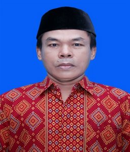
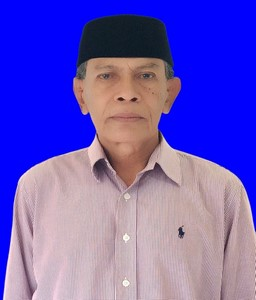

Berdasarkan Peraturan Pemerintah No. 21 tahun 1978 tentang Pembentukan Kota Administratif Mataram yang diresmikan oleh Menteri Dalam Negeri pada tanggal 29 Agustus 1978, maka seluruh Desa yang ada di Kota Administratif Mataram berubah status menjadi Kelurahan.
Kelurahan Pejarakan Karya berdiri Mei 2007 telah terjadi 6 kali pergantian Pimpinan. Adapun nama-nama lurah yang bertugas di Kelurahan Pejarakan Karya adalah sebagai berikut :
Nama-Nama Lurah Sejak 2007-Sekarang (2025)
1. Drs. H. Suparto. Sejak tahun 2007-2010
2. ALWI, S.IP tahun 2010-2016
3. R. ROOS NUGROHO, SE. Sejak tahun 2016-2019
4. BURDI, S. Sos tahun 2019-2021
5. YUDHI ARIADI, S. Adm. Sejak tahun 2021-2022
6. MULHAKIM, SH. Sejak tahun 2023-Sekarang

Kelurahan Pejarakan Karya membawahi 4 (empat) Lingkungan dan 26 RT. Masing-masing lingkungan dikepalai oleh:
Nama-Nama KALING Sekarang (2025)
1. Sapri, S. Sos - Kaling Moncok Karya

2. Subki, S. Adm - Kaling Moncok Telaga Mas

3. M. Ramadhin, S. Sos - Kaling Pejarakan

4. Bahrun - Kaling Penan

Kelurahan Pejarakan Karya merupakan salah satu kelurahan dari 10 kelurahan yang berada di Kecamatan Ampenan dengan luas wilayah + 73,942 Ha dengan batas-batas sebagai berikut:
1. Sebelah Utara: Kel. Ampenan Utara
2. Sebelah Timur: Kelurahan Kecamatan Selaparang
3. Sebelah Selatan: Kecamatan Selaparang
4. Sebelah Barat: Kelurahan Kebun Sari
Luas wilayah seperti di atas telah diatur dalam suatu tata ruang yang terdiri dari:
1. Pemukiman:13,40 Ha
2. Pertokoan:1,10 Ha
3. Persawahan:42,65 Ha
4. Fasilitas Umum dan Jalan:11,10 Ha
5. Lain-Lainnya:5,69 Ha
Kelurahan Pejarakan Karya secara administratif sejak tahun 2007 terdiri dari 4 lingkungan dan 26 RT yaitu:
1. Lingkungan Penan:5 RT
2. Lingkungan Pejarakan:8 RT
3. Lingkungan Moncok Karya:8 RT
4. Lingkungan Moncok Telaga Mas:5 RT
VISI: Terwujudnya Pelayanan Prima Menuju Masyarakat Pejarakan Karya yang Harmoni, Ramah, Unggul, Mandiri (HARUM)
MISI:
1. Meningkatkan kompetensi masyarakat melalui pendidikan.
2. Mendorong kemajuan ekonomi, sosial dan budaya.
3. Meningkatkan kualitas aparatur kelurahan.
4. Meningkatkan partisipasi warga dalam pembangunan.
5. Mewujudkan transparansi dan akuntabilitas pembangunan.
Pendidikan Masyarakat
Program pendidikan diarahkan kepada penuntasan wajib belajar...
Keberadaan bangunan sekolah:
1. RA Bani Sholeh - Penan
2. TK Ar-Royan - Penan
3. TK Tanwirul Qulub - Pejarakan
4. TK Al Wahida - Moncok Karya
5. TK IT Ar Rahman - Moncok Karya
6. SDN 16 Ampenan - Moncok Karya
7. SDN 24 Ampenan - Pejarakan